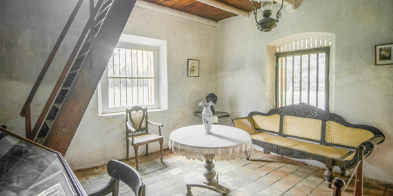

3. Martin Wickramasinghe Folk Museum |
|  |
The Martin Wickramasinghe Trust has built a Folk Museum Complex around the house where Martin Wickramasinghe was born, which is surrounded by a restored ecosystem with hundreds of varieties of indigenous trees and shrubs and abundant birdlife. The house and its surroundings bring to life a small fraction of the Koggala that Wickramasinghe eloquently depicts in his writings. |
Distance from Katunayaka Airport : 160 km and it takes about 2 to 2 ½ hours |